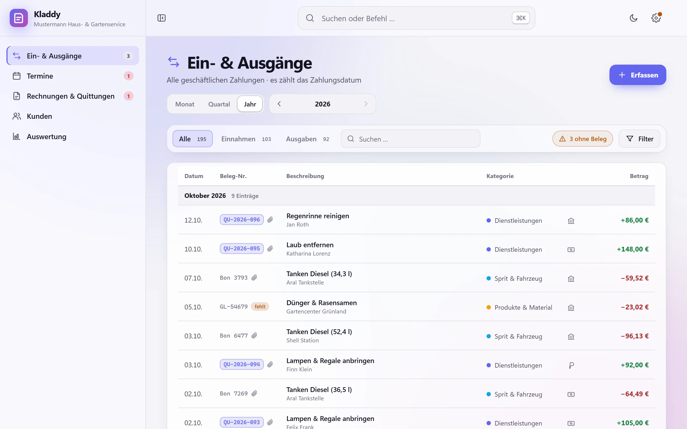
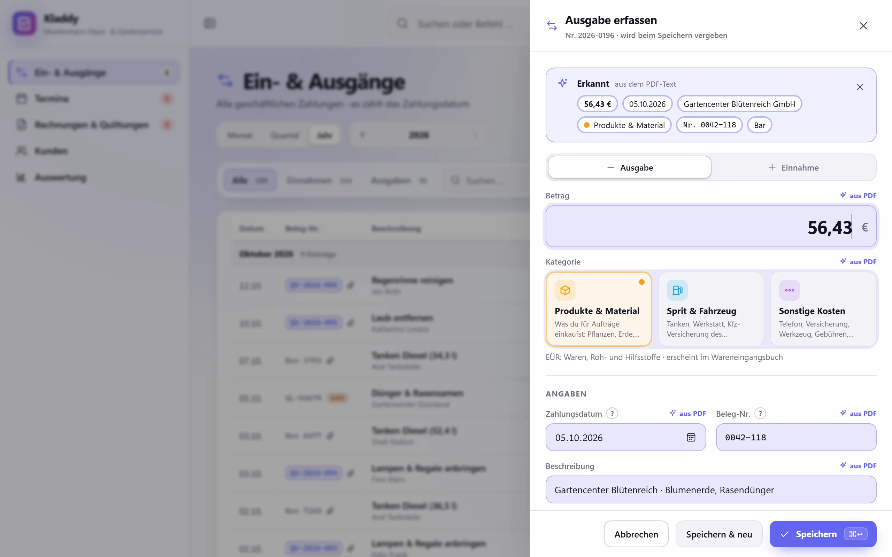
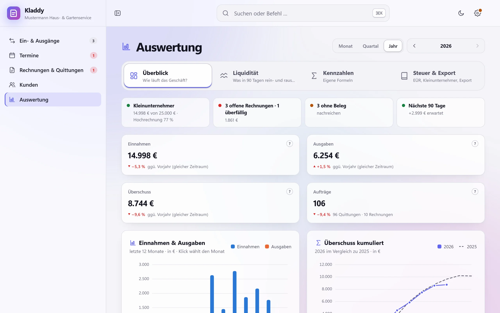

Alles in einem Ordner
Eine Datenbank-Datei und deine Belege – ganz normale Dateien auf deinem Mac:
~/Library/Application Support/de.kladdy.desktop/
Im Finder kommst du über Gehe zu → Gehe zu Ordner … (⇧⌘G) dorthin.
Für Kleinunternehmer nach § 19 UStG.
Alles bleibt auf deinem Mac – kein Konto, kein Abo.
Beispielmodus: Repository in seite.js eintragen – dann zeigt der Download-Knopf auf die neueste Version.

Funktionen
So wie das Menü der App: Du erfasst, was rein- und rausgeht, schreibst Quittungen und Rechnungen und hast am Jahresende alles für die EÜR beisammen.
Alle geschäftlichen Zahlungen in einer ruhigen Liste, jeweils mit Zahlungsweg. Zieh ein Beleg-PDF aufs Fenster – Betrag und Datum werden erkannt und vorausgefüllt.
Trag deine Kundentermine ein und bereite die Quittung gleich mit vor. Nach dem Termin hakst du ihn ab und stellst die Quittung aus.
Eine Eingabemaske mit Live-Vorschau, laufende Nummern und ein Check der Pflichtangaben. Drucken oder als PDF speichern.
Zu jedem Kunden siehst du den Verlauf: wann du dort warst, was du gemacht hast, Betrag und Beleg. Dazu Kontaktdaten und eine Notiz wie „Hund im Garten“.
Der Überblick über dein Jahr, was in den nächsten Wochen rein- und rausgeht, und alles für die Steuererklärung.


Deine Daten
Kladdy ist eine reine Mac-App. Deine Buchungen, Kunden und Belege werden nirgendwohin übertragen.
Eine Datenbank-Datei und deine Belege – ganz normale Dateien auf deinem Mac:
~/Library/Application Support/de.kladdy.desktop/
Im Finder kommst du über Gehe zu → Gehe zu Ordner … (⇧⌘G) dorthin.
latest.json von GitHub, um zu sehen, ob es eine neue Version gibt.Du wählst selbst, wo dein Backup liegt: USB-Stick, externe Festplatte oder iCloud Drive. Liegt es nur auf demselben Mac, erinnert dich die App daran.
Vor jedem Update legt die App automatisch ein Backup an.
Installieren
Keine Installation im eigentlichen Sinn, keine Admin-Rechte: herunterladen, in „Programme“ ziehen, einmal freigeben.
Lade die aktuelle Version herunter. In deinem Download-Ordner landet eine Datei wie Kladdy_1.0.0_aarch64.dmg.
Öffne die .dmg-Datei per Doppelklick und zieh Kladdy auf den Ordner Programme. Danach kannst du die .dmg auswerfen und löschen.
Öffne Kladdy aus „Programme“. macOS meldet, dass die App nicht geöffnet wurde – klick auf Fertig (nicht auf „In den Papierkorb legen“). Dann:
Das musst du nur ein einziges Mal machen. Der Rechtsklick → „Öffnen“ reicht seit macOS 15 nicht mehr; der Weg über die Systemeinstellungen funktioniert auf allen Versionen.
Ab jetzt startet Kladdy ganz normal. Gibt es eine neue Version, meldet sich die App mit „Version 1.2 ist da“. Ein Klick auf Jetzt aktualisieren genügt; vorher legt die App automatisch ein Backup an. Du musst nichts neu herunterladen.
Apps von Entwicklern im Apple-Entwicklerprogramm werden von Apple geprüft („notarisiert“). Das Programm kostet 99 $ im Jahr – Kladdy ist ein kleines Projekt und nimmt nicht daran teil. Deshalb kennt macOS die App nicht und fragt einmal nach.
Die App ist trotzdem signiert, und jedes Update ist kryptografisch geprüft: Kladdy installiert nur Updates, deren Signatur zum Schlüssel passt, der in der App hinterlegt ist.
Was ist neu
Erste Version.
Das ist ein Beispiel. Sobald das GitHub-Repository eingetragen ist, stehen hier die echten Versionshinweise.
Fragen
Nein. Kladdy ist kostenlos – ohne Abo, ohne Werbung, ohne Konto.
Nein. Du lädst die App herunter und legst los. Es gibt keine Anmeldung – weder bei uns noch bei einem anderen Dienst.
Nur auf deinem Mac, im Ordner ~/Library/Application Support/de.kladdy.desktop/: eine Datenbank-Datei (SQLite) und deine Belege.
Im Finder kommst du über Gehe zu → Gehe zu Ordner … (⇧⌘G) dorthin.
In der App unter Einstellungen → Daten & Backup. Wähle als Ziel einen USB-Stick, eine externe Festplatte oder iCloud Drive.
Liegt dein Backup nur auf demselben Mac, erinnert dich die App daran – geht der Mac kaputt, wäre das Backup sonst mit weg.
Nein. Kladdy hilft dir, Ordnung zu halten und die Zahlen für die EÜR zusammenzustellen. Das ist keine Steuerberatung, alle Angaben sind ohne Gewähr.
Wenn du unsicher bist, frag eine Steuerberaterin, einen Steuerberater oder dein Finanzamt.
Nein, Kladdy gibt es nur für den Mac.
Weil die App nicht bei Apple notarisiert ist – dafür bräuchte es das Apple-Entwicklerprogramm (99 $ im Jahr). Du gibst die App einmal in den Systemeinstellungen frei, danach startet sie ganz normal.
Sie bleiben, wo sie sind. Vor jedem Update legt die App automatisch ein Backup an. Falls eine neue Version das Datenformat erweitert, passt sie es beim ersten Start selbst an.